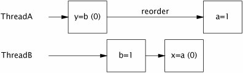
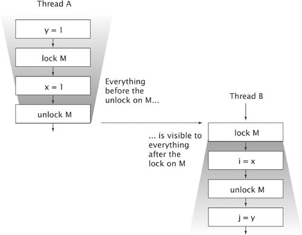

{% include JB/setup %}
{% raw %}
<div>


<a href="21021536.html" class="calibre2"></a><a name="ch16lev1sec1" class="calibre18" id="ch16lev1sec1"></a>
<h3 id="title-IDAVQRXH" class="docSection1Title">16.1. What is a Memory Model, and Why would I Want One?</h3>
<p class="docText1">Suppose one thread assigns a value to <tt class="calibre25">aVariable</tt>:</p>
<div class="docText2"><pre class="calibre36">aVariable = 3;</pre></div><p class="calibre1"> </p>
<p class="docText1">A memory model addresses the question "Under what conditions does a thread that reads <tt class="calibre25">aVariable</tt> see the value 3?" This may sound like a dumb question, but in the absence of synchronization, there are a number of reasons a threadmight not immediatelyor eversee the results of an operation in another thread. Compilers may generate instructions in a different order than the "obvious" one suggested by the source code, or store variables in registers instead of in memory; processors may execute instructions in parallel or out of order; caches may vary the order in which writes to variables are committed to main memory; and values stored in processor-local caches may not be visible to other processors. These factors can prevent a thread from seeing the most up-to-date value for a variable and can cause memory actions in other threads to appear to happen out of orderif you don't use adequate synchronization.</p>
<p class="docText1">In a single-threaded environment, all these tricks played on our program by the environment are hidden from us and have no effect other than to speed up execution. The Java Language Specification requires the JVM to maintain <span class="docEmphasis">withinthread as-if-serial semantics</span>: as long as the program has the same result as if it were executed in program order in a strictly sequential environment, all these games are permissible. And that's a good thing, too, because these rearrangements are responsible for much of the improvement in computing performance <a name="iddle1196" class="calibre18" id="iddle1196"></a><a name="iddle2620" class="calibre18" id="iddle2620"></a><a name="iddle3195" class="calibre18" id="iddle3195"></a><a name="iddle3200" class="calibre18" id="iddle3200"></a><a name="iddle3201" class="calibre18" id="iddle3201"></a><a name="iddle3205" class="calibre18" id="iddle3205"></a><a name="iddle3222" class="calibre18" id="iddle3222"></a><a name="iddle3223" class="calibre18" id="iddle3223"></a><a name="iddle3263" class="calibre18" id="iddle3263"></a><a name="iddle3264" class="calibre18" id="iddle3264"></a><a name="iddle4160" class="calibre18" id="iddle4160"></a><a name="iddle4233" class="calibre18" id="iddle4233"></a><a name="iddle4234" class="calibre18" id="iddle4234"></a><a name="iddle5102" class="calibre18" id="iddle5102"></a><a name="iddle5103" class="calibre18" id="iddle5103"></a>in recent years. Certainly higher clock rates have contributed to improved performance, but so has increased parallelismpipelined superscalar execution units, dynamic instruction scheduling, speculative execution, and sophisticated multilevel memory caches. As processors have become more sophisticated, so too have compilers, rearranging instructions to facilitate optimal execution and using sophisticated global register-allocation algorithms. And as processor manufacturers transition to multicore processors, largely because clock rates are getting harder to increase economically, hardware parallelism will only increase.</p>
<p class="docText1">In a multithreaded environment, the illusion of sequentiality cannot be maintained without significant performance cost. Sincemost of the time threads within a concurrent application are each "doing their own thing", excessive inter-thread coordination would only slow down the application to no real benefit. It is only when multiple threads share data that it is necessary to coordinate their activities, and the JVM relies on the program to identify when this is happening by using synchronization.</p>
<p class="docText1">The JMM specifies the minimal guarantees the JVM must make about when writes to variables become visible to other threads. It was designed to balance the need for predictability and ease of program development with the realities of implementing high-performance JVMs on a wide range of popular processor architectures. Some aspects of the JMM may be disturbing at first if you are not familiar with the tricks used by modern processors and compilers to squeeze extra performance out of your program.</p>
<a name="ch16lev2sec1" class="calibre18" id="ch16lev2sec1"></a>
<h4 id="title-IDA2WRXH" class="docSection2Title">16.1.1. Platform Memory Models</h4>
<p class="docText1">In a shared-memory multiprocessor architecture, each processor has its own cache that is periodically reconciled with main memory. Processor architectures provide varying degrees of <span class="docEmphasis">cache coherence</span>; some provide minimal guarantees that allow different processors to see different values for the same memory location at virtually any time. The operating system, compiler, and runtime (and sometimes, the program, too) must make up the difference between what the hardware provides and what thread safety requires.</p>
<p class="docText1">Ensuring that every processor knows what every other processor is doing at all times is expensive. Most of the time this information is not needed, so processors relax their memory-coherency guarantees to improve performance. An architecture's <span class="docEmphasis">memory model</span> tells programs what guarantees they can expect from the memory system, and specifies the special instructions required (called <span class="docEmphasis">memory barriers</span> or <span class="docEmphasis">fences</span>) to get the additional memory coordination guarantees required when sharing data. In order to shield the Java developer from the differences between memory models across architectures, Java provides its own memory model, and the JVMdeals with the differences between the JMMand the underlying platform's memory model by inserting memory barriers at the appropriate places.</p>
<p class="docText1">One convenient mental model for program execution is to imagine that there is a single order in which the operations happen in a program, regardless of what processor they execute on, and that each read of a variable will see the last write in the execution order to that variable by any processor. This happy, if unrealistic, model is called <span class="docEmphasis">sequential consistency</span>. Software developers often <a name="iddle1040" class="calibre18" id="iddle1040"></a><a name="iddle2775" class="calibre18" id="iddle2775"></a><a name="iddle3203" class="calibre18" id="iddle3203"></a><a name="iddle3204" class="calibre18" id="iddle3204"></a><a name="iddle3856" class="calibre18" id="iddle3856"></a>mistakenly assume sequential consistency, but no modern multiprocessor offers sequential consistency and the JMM does not either. The classic sequential computing model, the von Neumann model, is only a vague approximation of how modern multiprocessors behave.</p>
<p class="docText1">The bottom line is that modern shared-memory multiprocessors (and compilers) can do some surprising things when data is shared across threads, unless you've told them not to through the use of memory barriers. Fortunately, Java programs need not specify the placement of memory barriers; they need only identify when shared state is being accessed, through the proper use of synchronization.</p>
<a name="ch16lev2sec2" class="calibre18" id="ch16lev2sec2"></a>
<h4 id="title-IDAWRYIU" class="docSection2Title">16.1.2. Reordering</h4>
<p class="docText1">In describing race conditions and atomicity failures in <a class="calibre2" href="ch02_split_000.html#ch02">Chapter 2</a>, we used interaction diagrams depicting "unlucky timing" where the scheduler interleaved operations so as to cause incorrect results in insufficiently synchronized programs. To make matters worse, the JMM can permit actions to appear to execute in different orders from the perspective of different threads, making reasoning about ordering in the absence of synchronization even more complicated. The various reasons why operations might be delayed or appear to execute out of order can all be grouped into the general category of <span class="docEmphasis">reordering</span>.</p>
<p class="docText1"><tt class="calibre25">PossibleReordering</tt> in <a class="calibre2" href="#ch16list01">Listing 16.1</a> illustrates how difficult it is to reason about the behavior of even the simplest concurrent programs unless they are correctly synchronized. It is fairly easy to imagine how <tt class="calibre25">PossibleReordering</tt> could print (1, 0), or (0, 1), or (1, 1): thread <span class="docEmphasis">A</span> could run to completion before <span class="docEmphasis">B</span> starts, <span class="docEmphasis">B</span> could run to completion before <span class="docEmphasis">A</span> starts, or their actions could be interleaved. But, strangely, <tt class="calibre25">PossibleReordering</tt> can also print (0, 0)! The actions in each thread have no dataflow dependence on each other, and accordingly can be executed out of order. (Even if they are executed in order, the timing by which caches are flushed to main memory can make it appear, from the perspective of <span class="docEmphasis">B</span>, that the assignments in <span class="docEmphasis">A</span> occurred in the opposite order.) <a class="calibre2" href="#ch16fig01">Figure 16.1</a> shows a possible interleaving with reordering that results in printing (0, 0).</p>
<a name="ch16fig01" class="calibre18" id="ch16fig01"></a><p class="calibre21"><div class="calibre12">
<h5 class="docExampleTitle">Figure 16.1. Interleaving Showing Reordering in <tt class="calibre33">PossibleReordering</tt>.</h5>
</div></p><p class="docText1">
</p>
<p class="calibre1"> </p>
<p class="docText1"><a name="iddle2155" class="calibre18" id="iddle2155"></a><a name="iddle2612" class="calibre18" id="iddle2612"></a><a name="iddle2613" class="calibre18" id="iddle2613"></a><a name="iddle3411" class="calibre18" id="iddle3411"></a><a name="iddle3412" class="calibre18" id="iddle3412"></a><a name="iddle3460" class="calibre18" id="iddle3460"></a><a name="iddle3463" class="calibre18" id="iddle3463"></a><tt class="calibre25">PossibleReordering</tt> is a trivial program, and it is still surprisingly tricky to enumerate its possible results. Reordering at the memory level can make programs behave unexpectedly. It is prohibitively difficult to reason about ordering in the absence of synchronization; it is much easier to ensure that your program uses synchronization appropriately. Synchronization inhibits the compiler, runtime, and hardware from reordering memory operations in ways that would violate the visibility guarantees provided by the JMM.<sup class="docFootnote"><a class="calibre2" href="#ch16fn01">[1]</a></sup></p><blockquote class="calibre19"><p class="docFootnote1"><sup class="calibre27"><a name="ch16fn01" class="calibre18" id="ch16fn01">[1]</a></sup> On most popular processor architectures, the memory model is strong enough that the performance cost of a volatile read is in line with that of a nonvolatile read.</p></blockquote>
<a name="ch16lev2sec3" class="calibre18" id="ch16lev2sec3"></a>
<h4 id="title-IDAXWYIU" class="docSection2Title">16.1.3. The Java Memory Model in 500 Words or Less</h4>
<p class="docText1">The Java Memory Model is specified in terms of <span class="docEmphasis">actions</span>, which include reads and writes to variables, locks and unlocks of monitors, and starting and joining with threads. The JMM defines a partial ordering <sup class="docFootnote"><a class="calibre2" href="#ch16fn02">[2]</a></sup> called <span class="docEmphasis">happens-before</span> on all actions within the program. To guarantee that the thread executing action <span class="docEmphasis">B</span> can see the results of action <span class="docEmphasis">A</span> (whether or not <span class="docEmphasis">A</span> and <span class="docEmphasis">B</span> occur in different threads), there must be a <span class="docEmphasis">happens-before</span> relationship between <span class="docEmphasis">A</span> and <span class="docEmphasis">B</span>. In the absence of a <span class="docEmphasis">happens-before</span> ordering between two operations, the JVM is free to reorder them as it pleases.</p><blockquote class="calibre19"><p class="docFootnote1"><sup class="calibre27"><a name="ch16fn02" class="calibre18" id="ch16fn02">[2]</a></sup> A partial ordering  is a relation on a set that is antisymmetric, reflexive, and transitive, but for any two elements <span class="docEmphasis">x</span> and <span class="docEmphasis">y</span>, it need not be the case that <span class="docEmphasis">x</span>  <span class="docEmphasis">y</span> or <span class="docEmphasis">y</span>  <span class="docEmphasis">x</span>. We use partial orderings every day to express preferences; we may prefer sushi to cheeseburgers and Mozart to Mahler, but we don't necessarily have a clear preference between cheeseburgers and Mozart.</p></blockquote>
<a name="ch16list01" class="calibre18" id="ch16list01"></a><h5 id="title-IDAIJ0IU" class="docExampleTitle">Listing 16.1. Insufficiently Synchronized Program that can have Surprising Results. <span class="docEmphasis">Don't Do this.</span></h5><p class="calibre21"><table cellspacing="0" width="90%" border="1" cellpadding="5" class="calibre5"><tr class="calibre6"><td class="calibre28">

<pre class="calibre30">public class PossibleReordering {
    static int x = 0, y = 0;
    static int a = 0, b = 0;

    public static void main(String[] args)
            throws InterruptedException {
        Thread one = new Thread(new Runnable() {
            public void run() {
                a = 1;
                x = b;
            }
        });
        Thread other = new Thread(new Runnable() {
            public void run() {
                b = 1;
                y = a;
            }
        });
        one.start(); other.start();
        one.join();   other.join();
        System.out.println("( "+ x + "," + y + ")");
    }
}
</pre><br class="calibre11"/>
</td></tr></table></p>
<p class="docText1"><a name="iddle1675" class="calibre18" id="iddle1675"></a><a name="iddle1763" class="calibre18" id="iddle1763"></a><a name="iddle3417" class="calibre18" id="iddle3417"></a><a name="iddle3418" class="calibre18" id="iddle3418"></a><a name="iddle4013" class="calibre18" id="iddle4013"></a><a name="iddle4547" class="calibre18" id="iddle4547"></a>A <span class="docEmphasis">data race</span> occurs when a variable is read by more than one thread, and written by at least one thread, but the reads and writes are not ordered by <span class="docEmphasis">happens-before</span>. A <span class="docEmphasis">correctly synchronized program</span> is one with no data races; correctly synchronized programs exhibit sequential consistency, meaning that all actions within the program appear to happen in a fixed, global order.</p>
<a name="ch16sb01" class="calibre18" id="ch16sb01"></a><p class="calibre21"><table cellspacing="0" width="90%" border="1" cellpadding="5" class="calibre5"><tr class="calibre6"><td class="calibre28">
<p class="docText1">The rules for <span class="docEmphasis">happens-before</span> are:</p>
<blockquote class="calibre19"><p class="calibre21"></p><p class="docText1"><span class="docEmphStrong">Program order rule.</span> Each action in a thread <span class="docEmphasis">happens-before</span> every action in that thread that comes later in the program order.</p></blockquote></td></tr></table></p><p class="calibre21"></p><p class="docText1"><span class="docEmphStrong">Monitor lock rule.</span> An unlock on a monitor lock <span class="docEmphasis">happens-before</span> every subsequent lock on that same monitor lock.<sup class="docFootnote"><a class="calibre2" href="#ch16fn03">[3]</a></sup></p><p class="calibre21"></p><p class="docText1"><span class="docEmphStrong">Volatile variable rule.</span> A write to a volatile field <span class="docEmphasis">happens-before</span> every subsequent read of that same field.<sup class="docFootnote"><a class="calibre2" href="#ch16fn04">[4]</a></sup></p><p class="calibre21"></p><p class="docText1"><span class="docEmphStrong">Thread start rule.</span> A call to <tt class="calibre25">Thread.start</tt> on a thread <span class="docEmphasis">happens-before</span> every action in the started thread.</p><p class="calibre21"></p><p class="docText1"><span class="docEmphStrong">Thread termination rule.</span> Any action in a thread <span class="docEmphasis">happens-before</span> any other thread detects that thread has terminated, either by successfully return from <tt class="calibre25">Thread.join</tt> or by <tt class="calibre25">Thread.isAlive</tt> returning <tt class="calibre25">false</tt>.</p><p class="calibre21"></p><p class="docText1"><span class="docEmphStrong">Interruption rule.</span> A thread calling <tt class="calibre25">interrupt</tt> on another thread <span class="docEmphasis">happens-before</span> the interrupted thread detects the interrupt (either by having <tt class="calibre25">InterruptedException</tt> tHRown, or invoking <tt class="calibre25">isInterrupted</tt> or <tt class="calibre25">interrupted</tt>).</p><p class="calibre21"></p><p class="docText1"><span class="docEmphStrong">Finalizer rule.</span> The end of a constructor for an object <span class="docEmphasis">happens-before</span> the start of the finalizer for that object.</p><p class="calibre21"></p><p class="docText1"><span class="docEmphStrong">Transitivity.</span> If <span class="docEmphasis">A happens-before B</span>, and <span class="docEmphasis">B happens-before C</span>, then <span class="docEmphasis">A happens-before C</span>.</p>
<p class="calibre1"> </p><blockquote class="calibre19"><p class="docFootnote1"><sup class="calibre27"><a name="ch16fn03" class="calibre18" id="ch16fn03">[3]</a></sup> Locks and unlocks on explicit <tt class="calibre35">Lock</tt> objects have the same memory semantics as intrinsic locks.</p></blockquote><blockquote class="calibre19"><p class="docFootnote1"><sup class="calibre27"><a name="ch16fn04" class="calibre18" id="ch16fn04">[4]</a></sup> Reads and writes of atomic variables have the same memory semantics as volatile variables.</p></blockquote>
<p class="docText1">Even though actions are only partially ordered, synchronization actionslock acquisition and release, and reads and writes of <tt class="calibre25">volatile</tt> variablesare totally ordered. This makes it sensible to describe <span class="docEmphasis">happens-before</span> in terms of "subsequent" lock acquisitions and reads of <tt class="calibre25">volatile</tt> variables.</p>
<p class="docText1"><a class="calibre2" href="#ch16fig02">Figure 16.2</a> illustrates the <span class="docEmphasis">happens-before</span> relation when two threads synchronize using a common lock. All the actions within thread <span class="docEmphasis">A</span> are ordered by the program <a name="iddle1119" class="calibre18" id="iddle1119"></a><a name="iddle1120" class="calibre18" id="iddle1120"></a><a name="iddle2396" class="calibre18" id="iddle2396"></a><a name="iddle2614" class="calibre18" id="iddle2614"></a><a name="iddle3413" class="calibre18" id="iddle3413"></a><a name="iddle3464" class="calibre18" id="iddle3464"></a><a name="iddle3554" class="calibre18" id="iddle3554"></a><a name="iddle4562" class="calibre18" id="iddle4562"></a>order rule, as are the actions within thread <span class="docEmphasis">B</span>. Because <span class="docEmphasis">A</span> releases lock <span class="docEmphasis">M</span> and <span class="docEmphasis">B</span> subsequently acquires <span class="docEmphasis">M</span>, all the actions in <span class="docEmphasis">A</span> before releasing the lock are therefore ordered before the actions in <span class="docEmphasis">B</span> after acquiring the lock. When two threads synchronize on <span class="docEmphasis">different</span> locks, we can't say anything about the ordering of actions between themthere is no <span class="docEmphasis">happens-before</span> relation between the actions in the two threads.</p>
<a name="ch16fig02" class="calibre18" id="ch16fig02"></a><p class="calibre21"><div class="calibre12">
<h5 class="docExampleTitle">Figure 16.2. Illustration of <span class="docEmphasis">Happens-before</span> in the Java Memory Model.</h5>
</div></p><p class="docText1">
</p>
<p class="calibre1"> </p>
<a name="ch16lev2sec4" class="calibre18" id="ch16lev2sec4"></a>
<h4 id="title-IDAU30IU" class="docSection2Title">16.1.4. Piggybacking on Synchronization</h4>
<p class="docText1">Because of the strength of the <span class="docEmphasis">happens-before</span> ordering, you can sometimes piggyback on the visibility properties of an existing synchronization. This entails combining the program order rule for <span class="docEmphasis">happens-before</span> with one of the other ordering rules (usually the monitor lock or volatile variable rule) to order accesses to a variable not otherwise guarded by a lock. This technique is very sensitive to the order in which statements occur and is therefore quite fragile; it is an advanced technique that should be reserved for squeezing the last drop of performance out of the most performance-critical classes like <tt class="calibre25">ReentrantLock</tt>.</p>
<p class="docText1">The implementation of the protected <tt class="calibre25">AbstractQueuedSynchronizer</tt> methods in <tt class="calibre25">FutureTask</tt> illustrates piggybacking. AQS maintains an integer of synchronizer state that <tt class="calibre25">FutureTask</tt> uses to store the task state: running, completed, or <a name="iddle2190" class="calibre18" id="iddle2190"></a>cancelled. But <tt class="calibre25">FutureTask</tt> also maintains additional variables, such as the result of the computation. When one thread calls <tt class="calibre25">set</tt> to save the result and another thread calls <tt class="calibre25">get</tt> to retrieve it, the two had better be ordered by <span class="docEmphasis">happens-before</span>. This could be done by making the reference to the result <tt class="calibre25">volatile</tt>, but it is possible to exploit existing synchronization to achieve the same result at lower cost.</p>
<p class="docText1"><tt class="calibre25">FutureTask</tt> is carefully crafted to ensure that a successful call to <tt class="calibre25">tryReleaseShared</tt> always <span class="docEmphasis">happens-before</span> a subsequent call to <tt class="calibre25">TRyAcquireShared</tt>; <tt class="calibre25">try-ReleaseShared</tt> always writes to a volatile variable that is read by <tt class="calibre25">TRyAcquire-Shared</tt>. <a class="calibre2" href="#ch16list02">Listing 16.2</a> shows the <tt class="calibre25">innerSet</tt> and <tt class="calibre25">innerGet</tt> methods that are called when the result is saved or retrieved; since <tt class="calibre25">innerSet</tt> writes <tt class="calibre25">result</tt> before calling <tt class="calibre25">releaseShared</tt> (which calls <tt class="calibre25">tryReleaseShared</tt>) and <tt class="calibre25">innerGet</tt> reads <tt class="calibre25">result</tt> after calling <tt class="calibre25">acquireShared</tt> (which calls <tt class="calibre25">TRyAcquireShared</tt>), the program order rule combines with the volatile variable rule to ensure that the write of <tt class="calibre25">result</tt> in <tt class="calibre25">innerGet</tt> <span class="docEmphasis">happens-before</span> the read of <tt class="calibre25">result</tt> in <tt class="calibre25">innerGet</tt>.</p>
<a name="ch16list02" class="calibre18" id="ch16list02"></a><h5 id="title-IDA3Y3IU" class="docExampleTitle">Listing 16.2. Inner Class of <tt class="calibre33">FutureTask</tt> Illustrating Synchronization Piggybacking.</h5><p class="calibre21"><table cellspacing="0" width="90%" border="1" cellpadding="5" class="calibre5"><tr class="calibre6"><td class="calibre28">

<pre class="calibre30"><span class="docEmphasis">// Inner class of FutureTask</span>
private final class Sync extends AbstractQueuedSynchronizer {
    private static final int RUNNING = 1, RAN = 2, CANCELLED = 4;
    private V result;
    private Exception exception;

    void innerSet(V v) {
        while (true) {
            int s = getState();
            if (ranOrCancelled(s))
                return;
            if (compareAndSetState(s, RAN))
                break;
        }
        result = v;
        releaseShared(0);
        done();
    }

    V innerGet() throws InterruptedException, ExecutionException {
        acquireSharedInterruptibly(0);
        if (getState() == CANCELLED)
            throw new CancellationException();
        if (exception != null)
            throw new ExecutionException(exception);
        return result;
    }
}
</pre><br class="calibre11"/>
</td></tr></table></p>
<p class="docText1"><a name="iddle3553" class="calibre18" id="iddle3553"></a><a name="iddle3735" class="calibre18" id="iddle3735"></a>We call this technique "piggybacking" because it uses an existing <span class="docEmphasis">happensbefore</span> ordering that was created for some other reason to ensure the visibility of object <span class="docEmphasis">X</span>, rather than creating a <span class="docEmphasis">happens-before</span> ordering specifically for publishing <span class="docEmphasis">X</span>.</p>
<p class="docText1">Piggybacking of the sort employed by <tt class="calibre25">FutureTask</tt> is quite fragile and should not be undertaken casually. However, in some cases piggybacking is perfectly reasonable, such as when a class commits to a <span class="docEmphasis">happens-before</span> ordering between methods as part of its specification. For example, safe publication using a <tt class="calibre25">BlockingQueue</tt> is a form of piggybacking. One thread putting an object on a queue and another thread subsequently retrieving it constitutes safe publication because there is guaranteed to be sufficient internal synchronization in a <tt class="calibre25">BlockingQueue</tt> implementation to ensure that the enqueue <span class="docEmphasis">happens-before</span> the dequeue.</p>
<p class="docText1">Other <span class="docEmphasis">happens-before</span> orderings guaranteed by the class library include:</p>
<ul class="calibre15"><li class="calibre16"><p class="docText1">Placing an item in a thread-safe collection <span class="docEmphasis">happens-before</span> another thread retrieves that item from the collection;</p></li><li class="calibre16"><p class="docText1">Counting down on a <tt class="calibre25">CountDownLatch</tt> <span class="docEmphasis">happens-before</span> a thread returns from <tt class="calibre25">await</tt> on that latch;</p></li><li class="calibre16"><p class="docText1">Releasing a permit to a <tt class="calibre25">Semaphore</tt> <span class="docEmphasis">happens-before</span> acquiring a permit from that same <tt class="calibre25">Semaphore</tt>;</p></li><li class="calibre16"><p class="docText1">Actions taken by the task represented by a <tt class="calibre25">Future</tt> <span class="docEmphasis">happens-before</span> another thread successfully returns from <tt class="calibre25">Future.get</tt>;</p></li><li class="calibre16"><p class="docText1">Submitting a <tt class="calibre25">Runnable</tt> or <tt class="calibre25">Callable</tt> to an <tt class="calibre25">Executor</tt> <span class="docEmphasis">happens-before</span> the task begins execution; and</p></li><li class="calibre16"><p class="docText1">A thread arriving at a <tt class="calibre25">CyclicBarrier</tt> or <tt class="calibre25">Exchanger</tt> <span class="docEmphasis">happens-before</span> the other threads are released from that same barrier or exchange point. If <tt class="calibre25">CyclicBarrier</tt> uses a barrier action, arriving at the barrier <span class="docEmphasis">happens-before</span> the barrier action, which in turn <span class="docEmphasis">happens-before</span> threads are released from the barrier.</p></li></ul>
<a href="21021536.html" class="calibre2"></a>
<p class="calibre3"> </p>

</div>

{% endraw %}

